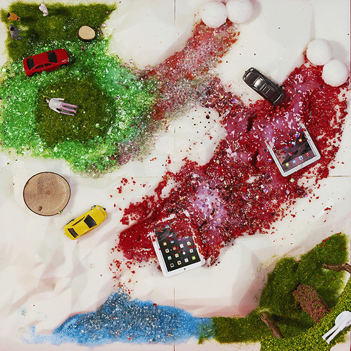

(인간의 숨소리, 그리고 기괴한 화성인의 웃음소리)
(강렬한 신스 베이스가 깔리며)
인간인 척, 완벽한 Mask on.
웰컴 투 마스(Mars), 속아 넘어갔어.
(시그니처 대사) 싹 다 불태워라. Bow wow wow.
지구에서 온 손님들, 반갑게 악수해
눈빛은 친절하게, 하지만 속으론 계산해
"핸드폰 좀 빌려줘, 사진 찍어줄게"
그 순간 폰은 내 손에, 넌 영원히 Bye, 굿바이!
저기 저 나무 기둥, 우리만의 Holy shrine
우리 종교 앞에 무릎 꿇어, It's show time!
(불타오르네!) Fire! 붉은 화산이 터져!
(불타오르네!) Fire! 지구인들은 빌어!
용암 속에 파묻힌 네 최신형 스마트폰
화성인의 트릭에 전부 다 녹아내려 고통 속에 론리(Lonely)
싹 다 불태워라! Bow wow wow!
"너도 인간이잖아?" 물어보는 네 눈빛
미안하지만 난 마션(Martian), 완벽한 Trick
뜨거운 기둥 아래 우리 신앙은 타올라
화산재 흩날리며 지구인은 사라져가
액정 화면 속엔 용암 빛이 번쩍여
여긴 이제 우리 땅, 다 끝났어, 널 덮쳐!
(음악이 잠시 멈추고, 낮고 읊조리는 목소리로)
폰 뺏긴 지구인, 발버둥 쳐봐도
화산의 불길은 절대 안 꺼져.
우리 종교의 기둥 아래, 모두 다 Ash(재)가 돼.
미치도록 뜨겁게, 자, 마지막 축제다.
(불타오르네!) Fire! 붉은 화산이 터져!
(불타오르네!) Fire! 지구인들은 빌어!
용암 속에 파묻힌 네 최신형 스마트폰
화성인의 트릭에 전부 다 녹아내려 고통 속에 론리(Lonely)
용암 속에 타버려.
핸드폰도, 너희도.
(강렬한 비트가 멈추며, 속삭이듯)
불타오르네.